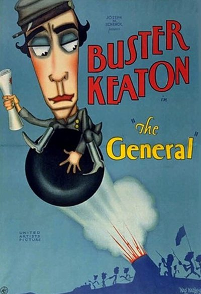

The General
Starring: Buster Keaton, Marion Mack, Charles Henry Smith
Director: Buster Keaton, Clyde Bruckman
Writer: Al Boasberg, Paul Girard Smith, Clyde Bruckman
Producer: Buster Keaton, Joseph M. Schenck
The General is a 1926 American silent comedy film released by United Artists. It was inspired by the Great Locomotive Chase, a true story of an event that occurred during the American Civil War. The story was adapted from the 1889 memoir The Great Locomotive Chase by William Pittenger. The film stars Buster Keaton, who also co-directed it along with Clyde Bruckman.
Watch Online: Internet Archive
Trivia
- In early 1926, Keaton's collaborator Clyde Bruckman told him about William Pittenger's 1889 memoir The Great Locomotive Chase about the 1862 Great Locomotive Chase.
- Keaton was a huge fan of trains and had read the book.
- Keaton looked into shooting the film in the area where the original events took place, and attempted to authorize a lease agreement for the real-life General.
Filming Locations
- Santa Monica
- Cottage Grove
Previous Showings
9 Runs • 5 Festivals
All runs on record (9):
- January 18, 1990w/ The Cameraman
- September 2, 1992
- February 24, 1995
- August 21, 1996
- July 29, 1998Dear Old Hollywood
- August 18, 1999Summer 1999
- August 20, 2003Summer 2003w/ The Mollycoddle
- August 12, 2011Summer 2011w/ One Week
- September 2, 2022Summer 2022 + Extended Summer Calendarw/ Big Business